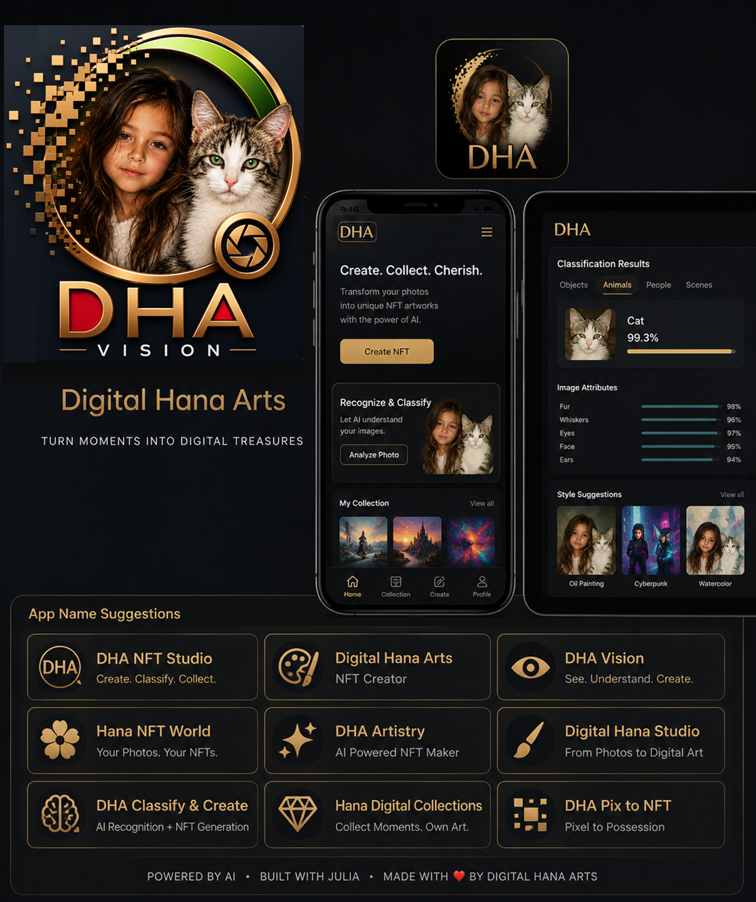

◇
Arte Digital
Sistemas generativos, arte algorítmico, fotografía computacional y medios digitales experimentales.
Entre el arte y el algoritmo, entre los datos y el sueño, entre la inteligencia y el instinto — DHA opera en el vacío de tinta.
Digital Hana Artes es un taller experimental de creatividad computacional que opera en el espacio intersticial entre la tecnología y la expresión artística.
Construimos software, sistemas visuales, experimentos de aprendizaje automático, obra de arte guiada por datos y activos digitales orientados a la blockchain — todo con una sensibilidad poshumana.
Nuestra pregunta central no es simple: ¿qué sucede cuando la computación se convierte en medio creativo?
DHA opera a través de disciplinas, no dentro de una sola categoría tecnológica. Esta es la reja descompuesta.
Sistemas generativos, arte algorítmico, fotografía computacional y medios digitales experimentales.
Minería de datos, análisis, visualización, computación estadística y descubrimiento guiado por datos.
Aprendizaje automático, aprendizaje profundo, visión por computador e inteligencia artificial generativa.
NFT, activos digitales, analítica en cadena y ecosistemas creativos descentralizados.


Una plataforma de investigación e ingeniería blockchain — que enlaza la ciencia de laboratorio, la infraestructura descentralizada y la computación verificable.

Una plataforma de arte computacional basada en Julia, que explora cómo las fotografías pueden transformarse — mediante procesamiento de imágenes, aprendizaje automático y sistemas generativos — en nuevas obras de arte digital.

Explore la colección oficial de Digital Hana Artes en OpenSea — activos digitales seleccionados, obras generativas y creaciones basadas en blockchain.
Digital Hana Artes toma su nombre de Hana — la gatita en el corazón de la identidad visual.
Su presencia introduce algo deliberadamente humano y orgánico en un mundo por lo demás computacional: curiosidad, individualidad y carácter.